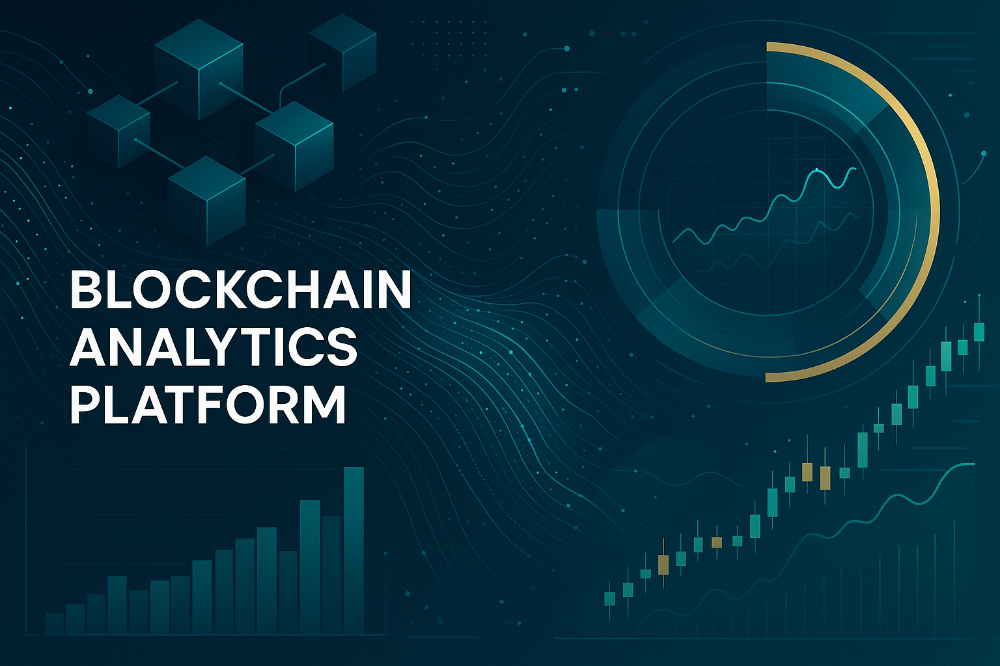
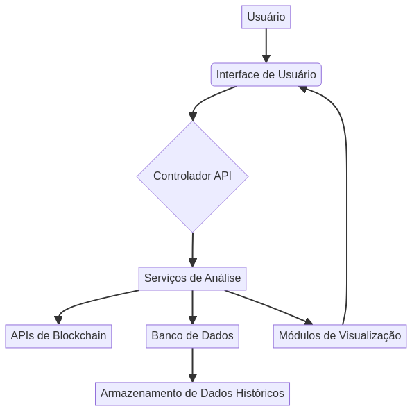

Visão Geral
Esta plataforma oferece ferramentas robustas para monitoramento de transações, análise de padrões de mercado e visualização de dados em tempo real.
Funcionalidades
- Arquitetura de código profissional
- Práticas modernas de desenvolvimento
- Tratamento abrangente de erros
- Otimizado para performance
- Base de código bem documentada
- Padrões da indústria
Arquitetura
Início Rápido
Para começar, clone o repositório e instale as dependências:
git clone https://github.com/galafis/Blockchain-Analytics-Platform.git
cd Blockchain-Analytics-Platform
pip install -r requirements.txt
python main.py